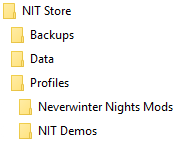
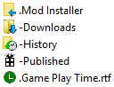

|
 |
|
|
The store contains a number of predefined folders each of which contains specific information. The Installer Tool presents information held in these folders and allows you to perform a range of operations without having to use Windows File Explorer. Each sub-folder of the Profiles directory contains the Mods you have created. The Mod name you assigned corresponds to the folder name containing the Mod's assets. |
|
 |
|
|
The Installer Tool creates and maintains some special folders and files in the Mod folder. In addition to these, you can create and store any file or directory in the Mod folder. |
This is a folder containing all the files that need to be installed to play or use a Mod. It contains sub-folders corresponding to the Neverwinter Nights directories into which the files should be placed. The only exception to this is the NWN sub-folder, which indicates that the files should be copied to the Neverwinter Nights' root directory (ie the folder containing the nwn.exe file) or the Enhanced Edition's User Files folder (eg \Documents\Neverwinter Nights).
This is a special Mod Installer that contains original or unowned files that can be used to restore contents when a Mod is uninstalled as well as create backups of character and other unowned files.
An unowned file is a file that is present in the Neverwinter Nights Installation or User Files folder and does not exist in any of your Profile's Mod folders.
Key concepts and terminology
Run the Installer Tool for the first time
Review Settings you may want to change
Deal with existing installed Mods